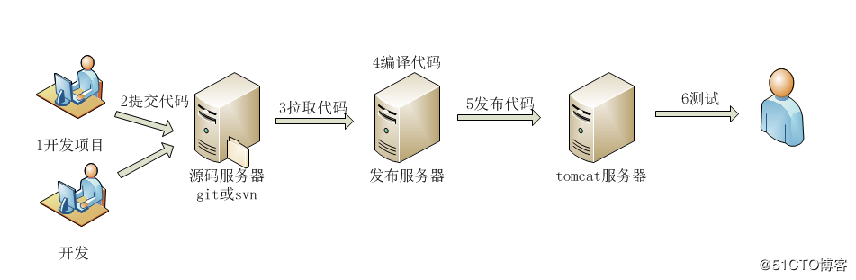

实战docker+jenkins+git+registry构建持续集成环境
关于jenkins的文章比较多，笔者决定写一篇比较详细的利用容器来构建jenkins+git+registry的文章来和大家共同讨论。文章比较长，需要有点耐心慢慢看完，如果大家在实验的过程中遇到问题，可以留言一起讨论或者加我QQ一起讨论都行。
本文重点介绍jenkins以及jenkins如何在docker容器中运行，jenkins和docker私有仓库又是怎么玩的。docker说明、安装和git说明、安装在本文中不会特别详细的介绍。
并且，在本文中不着重介绍原理性的东西，比如不会介绍什么是持续集成、持续构建等等。本文的重点是实战为主。对持续集成、持续交付、持续部署等概念不太了解的朋友可以参考这篇文章了解一下：https://www.zhihu.com/question/23444990
1.背景说明
Jenkins是一个开源软件项目，是基于Java开发的一种持续集成工具，用于监控持续重复的工作，旨在提供一个开放易用的软件平台，使软件的持续集成变成可能。
先来了解一下比较典型的java项目发布工作流程：
１.java项目开发 >> 2.提交项目代码到(git或svn) >> 3. 拉取项目代码(jenkins或手动) >> 4.编译项目代码(jenkins或手动) >> 5.发布java项目，并运行java项目 >> 6.测试

在来看看用docker+jenkins+git发布java项目流程又是怎样的呢：
1.java项目开发 >> 2.提交项目代码git容器 >> 3.jenkins容器拉取项目代码 >> 4.maven编译构建项目 >> 5.jenkins发布项目到tomcat容器 >> 6.测试
看到上面的流程后，在没有jenkins的情况下这些步骤都是手工完成的，有了Jenkins的帮助，在这6步中，除了第1步，后续的5步都是自动化完成的。当你完成了提交，Jenkins会自动运行你的编译脚本，编译成功后，再运行你的测试脚本，这一步成功后，接着它会帮你把新程序发布出去，特别的，在最后一步，你可以选择手动发布，或自动发布。
2.环境描述
1、服务器部署信息
| 服务器 | 主机名 | IP | 运行服务 |
|---|---|---|---|
| jenkins服务器 | jenkins | 172.18.18.32 | 安装docker、 运行jenkins容器、git客户端、jdk、maven |
| docker服务器 | docker | 172.18.18.33 | 安装docker、创建镜像运行java项目：tale |
| Git和私有仓库服务器 | git_registry | 172.18.18.34 | 安装docker、git服务、运行registry私有仓库容器 |
说明：
- 本文中完全是模拟生产环境中服务器的规划：git单独部署、jenkins单独部署。如果你没有这么多服务器，可以把git服务器和jenkins服务器放在一起来测试。前提是不要搞晕了就可以。
- tale是一个java写的开源博客系统，这个项目没有任何依赖，所以在此次测试中可以用它做为构建、部署的对象。当然如果你有其它的java项目也可以不用它来测试。
- tale访问地址：https://github.com/otale/tale.git
2、版本信息
| 名称 | 版本 | 软件包 | 说明 |
|---|---|---|---|
| 服务器 | Centos 7.4 | 无 | linux系统 |
| docker | 17.12.0-ce | yum安装 | docker引擎服务 |
| jdk | 1.8.0_45 | jdk-8u45-linux-x64.tar.gz | 运行jenkins需要的JDK环境 |
| maven | 3.5.0 | apache-maven-3.5.0-bin.tar.gz | 构建java项目需要的工具 |
| jenkins | 最新版本 | docker hub下载最新jenkins镜像 | 持续集成工具 |
| registry | 最新版本 | docker hub下载最新registry镜像 | docker私有仓库 |
jdk官方下载地址：http://www.oracle.com/technetwork/cn/java/javase/downloads/jdk8-downloads-2133151-zhs.html
maven官方下载地址：https://maven.apache.org/download.cgi
jenkins官方镜像地址：https://hub.docker.com/_/jenkins/
registry官方镜像地址：https://hub.docker.com/_/registry/
3.部署环境
3.1 部署git服务
注意：这个步骤在 git_registry 服务器上操作
1、安装git
[root@git_registry ~]# yum -y install git2、创建git用户
[root@git_registry ~]# useradd git
[root@git_registry ~]# passwd git
Changing password for user git.
New password:
BAD PASSWORD: The password is shorter than 8 characters
Retype new password:
passwd: all authentication tokens updated successfully.
#记得切换创建的git用户操作：
[root@git_registry ~]#su - git3、创建仓库
创建app.git仓库，仓库名自定义，这一步需要切换刚才创建的git用户操作
[git@git_registry root]$ cd /home/git/
[git@git_registry ~]$ cd app.git/
[git@git_registry app.git]$ git --bare init
Initialized empty Git repository in /home/git/app.git/
#然后用ls查看一下app.git仓库初始化完成了：
[git@git_registry app.git]$ ls
branches config description HEAD hooks info objects refs3.2 验证git服务
注意：这个步骤在 jenkins 服务器上操作
正常来说，开发用自己的电脑把写好的代码push到git仓库就算完成验证，在本文中去github里下载一个java项目（tale）来验证，我们就用jenkins这台服务器做为git客户端吧：
1、下载git客户端
[root@jenkins ~]# yum -y install git2、下载tale项目包
#先创建个目录来存放tale包，随便放在哪个空目录下都行，后面我们还需要把它移走
[root@jenkins ~]# mkdir /tale
[root@jenkins ~]# git clone https://github.com/otale/tale.git
#在查看下载好的tale项目
[root@jenkins tale]# ls
bin LICENSE package.xml pom.xml README.md README_ZH.md src3、生成公钥，拷贝到git服务器
[root@jenkins tale]# ssh-keygen -t rsa
Generating public/private rsa key pair.
Enter file in which to save the key (/root/.ssh/id_rsa):
Enter passphrase (empty for no passphrase):
Enter same passphrase again:
Your identification has been saved in /root/.ssh/id_rsa.
Your public key has been saved in /root/.ssh/id_rsa.pub.
The key fingerprint is:
SHA256:S6qxaVNuJ5inLxGDdrqqlpNsG4AsmcXH88dXckHdIOI root@jenkins
The key's randomart image is:
+---[RSA 2048]----+
| ..+..o |
| . . . . o. .|
| o.+ E o |
|o+o.+o . + |
|*o o o. S . |
|o . . .+ o |
|..o..*. . |
| Bo *== . |
|*oo.=B.o |
+----[SHA256]-----+
#把公钥拷贝到git服务器，注意用刚才的git用户
[root@jenkins tale]# ssh-copy-id git@172.18.18.34
/usr/bin/ssh-copy-id: INFO: Source of key(s) to be installed: "/root/.ssh/id_rsa.pub"
/usr/bin/ssh-copy-id: INFO: attempting to log in with the new key(s), to filter out any that are already installed
/usr/bin/ssh-copy-id: INFO: 1 key(s) remain to be installed -- if you are prompted now it is to install the new keys
git@172.18.18.34's password:
Number of key(s) added: 1
Now try logging into the machine, with: "ssh 'git@172.18.18.34'"
and check to make sure that only the key(s) you wanted were added.4、用git clone验证
#先创建个目录，目录名随便定义，用于拉取git服务器上创建的app.git仓库
[root@jenkins tale]# mkdir /git
[root@jenkins tale]# cd /git/
#配置下git客户端的用户信息
[root@jenkins git]# git config --global user.email "test@qq.com"
[root@jenkins git]# git config --global user.name "test"
#在来git clone，由于app.git仓库是空的，所以会很快
[root@jenkins git]# git clone git@172.18.18.34:/home/git/app.git
Cloning into 'app'...
warning: You appear to have cloned an empty repository.
5、把之前下载的tale项目push到app.git仓库中
#先移动至刚才/git目录下
[root@jenkins git]# mv /tale/* /git/app/
[root@jenkins git]# cd /git/app/
[root@jenkins app]# ls
bin LICENSE package.xml pom.xml README.md README_ZH.md src
#然后提交到git仓库
[root@jenkins app]# git add .
[root@jenkins app]# git commit -m "add project tale"
[root@jenkins app]# git push origin master
Counting objects: 297, done.
Delta compression using up to 4 threads.
Compressing objects: 100% (255/255), done.
Writing objects: 100% (297/297), 6.35 MiB | 0 bytes/s, done.
Total 297 (delta 22), reused 0 (delta 0)
To git@172.18.18.34:/home/git/app.git
* [new branch] master -> master3.3 部署docker私有仓库
注意：这个步骤在 git_registry 服务器上操作
我们还是用官方的镜像来创建docker私有仓库：
[root@git_registry /]# docker run -d -v /opt/registry:/var/lib/registry -p 5000:5000 --restart=always --name rregistry registry查看一下私有仓库已经起来了：
[root@git_registry /]# docker ps -l
CONTAINER ID IMAGE COMMAND CREATED STATUS PORTS NAMES
4ac357e4b6dd registry "/entrypoint.sh /etc…" 7 seconds ago Up 7 seconds 0.0.0.0:5000->5000/tcp rregistry对registry私有仓库不太了解的朋友可以参考笔者的这篇文章 《docker：用registry快速搭建私有镜像仓库》
3.4 配置docker服务器
注意：这个步骤在 docker服务器上操作
这台服务器就是在docker中运行刚才的tale 这个java项目的服务器，所以我们要在这台服各器上安装下docker。
1、安装Docker
[root@docker ~]# yum install -y yum-utils device-mapper-persistent-data lvm2
[root@docker ~]# yum-config-manager --add-repo https://download.docker.com/linux/centos/docker-ce.repo
[root@docker ~]# yum install docker-ce2、配置镜像源为国内官方源
[root@docker ~]# vim /etc/docker/daemon.json
{
"registry-mirrors": [ "https://registry.docker-cn.com"],
"insecure-registries": [ "172.18.18.34:5000"]
}注意书写格式为json格式，有严格的书写要求；
第1行是国内镜像源，第2行是docker私有仓库地址；
172.18.18.34就是docker私有仓库的地址，添加后连接docker私有仓库就是用http协议了。
3、启动dokcer服务
[root@docker ~]# systemctl restart docker4、部署JDK
由于后面运行java容器需要jdk环境，jdk如果放在容器中运行容器又相当重，所以就在宿主机上部署jdk，后面创建java容器的时候把宿主机的jdk路径挂载到容器就去。部署jdk很简单，解压就行：
[root@docker ~]# tar -zxvf jdk-8u45-linux-x64.tar.gz -C /usr/local/我们把它解压在docker这台宿主机的/usr/local目录中。
5、构建tale开源博客的基础镜像
其实，这个镜像随便在哪台服务器上构建都行，在本文中就直接在这台docker服务器构建了：
[root@docker /]# mkdir dockerfile_tale
[root@docker /]# cd dockerfile_tale/
[root@docker dockerfile_tale]# vim Dockerfile
FROM centos:7
RUN yum install epel-release -y
RUN yum install nginx supervisor -y && yum clean all
RUN sed -i '47a proxy_pass http://127.0.0.1:9000;' /etc/nginx/nginx.conf
COPY supervisord.conf /etc/supervisord.conf
ENV PATH /usr/local/jdk/bin:$PATH
WORKDIR /tale
CMD ["/usr/bin/supervisord"]说明：此Dockerfile以centos7为基础镜像，通过yum安装nginx、supervisor服务。定义jdk的环境变量，并通过supervisord来启动nginx和java项目。下面来看下supervisord.conf配置。
[root@docker dockerfile_tale]# ls /dockerfile_tale/
Dockerfile supervisord.conf
[root@docker dockerfile_tale]# cat supervisord.conf
[supervisord]
nodaemon=true
[program:tale]
command=/usr/local/jdk/bin/java -jar /tale/tale-least.jar
autostart=true
autorestart=true
[program:nginx]
command=/usr/sbin/nginx -g "daemon off;"
autostart=true
autorestart=true上面的配置都是基础配置，分别是通过java -jar启动tale-least:jar包，nginx -g 启动nginx服务。
然后，构建镜像：
[root@docker dockerfile_tale]#docker build -t tale:base .
[root@docker dockerfile_tale]# docker images
REPOSITORY TAG IMAGE ID CREATED SIZE
tale base b6d5028ecc3b 2 seconds ago 372MB
centos 7 2d194b392dd1 6 days ago 195MB对tale:base镜像打tag，并上传到registry私有仓库：
[root@docker /]#docker tag tale:base 172.18.18.34:5000/tale:base
[root@docker /]#docker push 172.18.18.34:5000/tale:base3.5 部署jenkins
注意：这个步骤在 jenkins 服务器上操作
1、部署JDK
由于jenkins需要jdk环境，jdk如果放在容器中运行容器又相当重，所以就在宿主机上部署jdk，后面创建jekins容器的时候把宿主机的jdk路径挂载到容器就去。部署jdk很简单，解压就行：
[root@jenkins /]# tar -zxvf jdk-8u45-linux-x64.tar.gz -C /usr/local/我们把它解压在宿主机的/usr/local目录中。
2、部署maven
由于本文后期是通过jenkins运行java项目，所以我们还需要maven工具，maven也和jdk部署一样，也不想在容器中运行maven，所以也是部署在宿主机上然后挂载到容器中。也是直接解压：
[root@jenkins local]# tar -zxvf apache-maven-3.5.0-bin.tar.gz -C /usr/local/查看一下这两个源码软件是否解压：
3、生成jenkins镜像
在本文中我们引用docker hub中的官方镜像来编写个Dockerfile文件：
#说明：下面我创建个目录来放置jenkins的Dockerfile文件，这个文件随便放在哪个目录都行
[root@jenkins /]# mkdir /Dockerfile_jenkins
[root@jenkins /]# cd Dockerfile_jenkins/
[root@jenkins Dockerfile_jenkins]# vim Dockerfile
FROM jenkins
USER root
RUN echo '' > /etc/apt/sources.list.d/jessie-backports.list && \
wget http://mirrors.163.com/.help/sources.list.jessie -O /etc/apt/sources.list
RUN apt-get update && apt-get install -y gitDockerfile说明：
- 第1行FROM引用了官方镜像jenkins，这个jenkins是基于debiant系统构建的。
- 第2行USER使用root用户来运行。
- 第3行RUN更改了apt-get源为国内163的源。
- 第4行RUN是安装git客户端，由于官方的jenkins镜像没有安装git客户端，我们需要在jenkins容器中调用git命令，所以在此需要安装下git客户端，当然你也可以启动jenkins容器后在容器中安装；不过笔者建议需要安装的东西最好的Dockerfile中就弄好。
4、构建jenkins镜像
[root@jenkins Dockerfile_jenkins]# docker build -t jenkins:v1 .查看一下构建的镜像：
5、创建jenkins镜像
[root@jenkins / ]#docker run -d \
--name jenkins \
-p 8080:8080 \
-v /var/jenkins_home/:/var/jenkins_home \
-v /usr/local/apache-maven-3.5.0:/usr/local/maven \
-v /usr/local/jdk1.8.0_45:/usr/local/jdk \
-v ~/.ssh:/root/.ssh \
jenkins:v1参数说明，上面的参数都是最常用的，都比较很简单很好理解
-d：在后台运行容器；
-p：映射端口；
-v：宿主机的目录挂载到容器；/var/jenkins_home 这个目录在宿主机中空的，这是把容器中的jenkinis主目录绑定到宿主机中来，其它的两个目录是之前解压的工具；
来查看jenkins运行状态：
[root@jenkins Dockerfile_jenkins]# docker top jenkins
UID PID PPID C STIME TTY TIME CMD
root 25304 25289 0 10:10 ? 00:00:00 /bin/tini -- /usr/local/bin/jenkins.sh
root 25335 25304 1 10:10 ? 00:00:17 java -jar /usr/share/jenkins/jenkins.war[root@jenkins Dockerfile_jenkins]# docker ps -l
CONTAINER ID IMAGE COMMAND CREATED STATUS PORTS NAMES
0c10bec5812e jenkins:v1 "/bin/tini -- /usr/l…" 18 minutes ago Up 18 minutes 0.0.0.0:8080->8080/tcp, 50000/tcp jenkins上面的两个状态显示jenkins容器运行都是OK的！！！
4.配置jenkins
4.1 初始化配置
-
通过http://ip:8080 来访问jenkins服务；
从上图给出的提示，需要从/var/jenkins_home/secrets/initialAdminPassword获取密码[root@jenkins /]# cat /var/jenkins_home/secrets/initialAdminPassword dff1d41be2254f87ad80a65eac621cb8 - 登录成功后回让你选择插件的安装，可以选择建议的安装也可以自己进行选择，不清楚的话可以使用建议的安装。由于建议安装的插件比较多，安装的过程有点慢，多等待一会；
- 安装完成后最好新创建一个管理员账户代替之前的临时自动生成的密码账户；
4.2 系统设置
进入“系统管理” -- “系统设置”，主要是把docker这台服务器通过ssh的形式添加进来，后期部署dokcer容器，如下图：
参数说明：
Name：172.18.18.33-docker
Hostname：172.18.18.33
Username：root
Remote Directory:/data 这个意思是把代码发布到172.18.18.83 /data目录中，需要手动创建个目录
Use password authentication, or use a different key：勾选它
Passphrase / Password：输入172.18.18.83这台docker服务器的密码
4.3 配置Maven、jdk、git环境
1、jdk配置
进“系统管理” -- "Global Tool Configuration"，添加jdk安装，如下图：
参数说明：
别名：自定义就行；
JAVA_HOME：这个是你jenkins容器里的JDK路径，不是宿主机的JDK路径；
2、maven配置
进“系统管理” -- "Global Tool Configuration"，添加maven安装，如下图：
参数说明：和jdk一样，MAVEN_HOME 的路径也是指向jenkins容器里的maven路径；
3、git配置
这里我没有动git的配置，让它为默认配置，如下图：
4.4 配置java项目
1、构建maven项目
点击“新建” -- “构建一个maven项目，项目名称定为java-tale，如下图：
2、源码管理
在“源码管理”项中选择Git，只需要配置git仓库的地址 “Repository URL”，之前我们在jenkins服务器上把公钥传输到了git服务器上了，所以不需要做认证，如下图：
3、构建触发器
在“构建触发器”选项中，选上“Poll SCM”，日程表 * ，每分钟都去捡查代码，这个和linux crontab是一样的含义。这一项你也可以不用测试，如下图：
4、build配置
在“Build”选项中，Goals and options输入：clean package。如下图：
5、构建后的配置
在“Post Steps”选项中，配置如下操作：
配置说明：
Nmae:选择需要部署的docker服务器，前面我们SSH增加了一台，所以这里可以直接选择；
source files：需要部署到目标服务的打包成果路径
Remove prefilx: “Source files”配置的路径中要移除的前缀
Remote directory：成果要发送到的远程目标服务目录路径，这个路径与第一步配置中的Remote Directory对应。
Exec command：成果发送完成后，需要执行的命令，具体如下
docker rm -f tale-test
docker rmi -f 172.18.18.34:5000/tale:base
docker run -itd \
--name tale-test \
-p 80:80 \
-v /usr/local/jdk1.8.0_45:/usr/local/jdk \
-v /data/tale:/tale \
172.18.18.34:5000/tale:base在Exec command执行中的命令都是在构建代码完成后的操作，会在172.18.18.33-docker这台服务器上执行。
第1/2条命令：其实这两步你先可以不用加上，到了下一次构建的时候你测试一下不加这两条命令会有什么结果。如果构建失败，你在加上这两条命令，其实这两条命令是事先删除容器和镜像文件，然后通过第3条命令运行全新的容器。
第3条命令：就是通过docker run来运行tale-test容器了，并把172.18.18.33-docker这台服务器的jdk和tale目录挂载到容器中。
6、测试
配置上之后，构建此项目：
查看控制台输出日志：
看到最上面完成的状态，就可以进行测试了，如果是第一次构建时间会比较久，它需要下载maven相关的依赖包。
然后登录docker服务器查看一下运行的容器：
[root@docker /]# docker ps
CONTAINER ID IMAGE COMMAND CREATED STATUS PORTS NAMES
83b29455b2c5 172.18.18.34:5000/tale:base "/usr/bin/supervisord" 6 minutes ago Up 6 minutes 0.0.0.0:80->80/tcp tale-test
[root@docker /]#docker top tale-test
UID PID PPID C STIME TTY TIME CMD
root 815 797 0 20:03 pts/0 00:00:00 /usr/bin/python /usr/bin/supervisord
root 862 815 0 20:03 pts/0 00:00:02 /usr/local/jdk/bin/java -jar /tale/tale-least.jar
root 863 815 0 20:03 pts/0 00:00:00 nginx: master process /usr/sbin/nginx -g daemon off;
polkitd 869 863 0 20:03 pts/0 00:00:00 nginx: worker process
polkitd 870 863 0 20:03 pts/0 00:00:00 nginx: worker process
polkitd 871 863 0 20:03 pts/0 00:00:00 nginx: worker process
polkitd 872 863 0 20:03 pts/0 00:00:00 nginx: worker process
root 962 797 0 20:04 ? 00:00:00 bash最后，通过用浏览器来访问一下这个用java写的tale开源博客项目：
从上面可以看到，我是通过docker那个服务器IP来访问的，访问是OK的。到此，实战docker+jenkins+git构建持续集成环境就结束了。
5.总结
1、首先要对整个流程熟悉，思路不能乱，规划好服务器数量和部署的应用服务。
2、本文中用的jar包来测试的，一般jar包直接用jar命令运行、也可以部署在tomcat容器中。jar包不依赖tomcat，所以本文在基础镜像172.18.18.34:5000/tale:base中只是安装了nginx，并没有安装tomcat。如果大家用war包，那么这个基础镜像就要重新制作了。
3、在4.4步的第5小步中“构建后的操作”，是不是有一堆命令，其实也可以把它写成一个shell脚本，直接调用一执行，看个人操作习惯。
4、还有就是用Dockferfile构建基础镜像中，这些服务都是通过yum来安装的，我们也可以把它换成源码安装，大家可以自行测试一下。
5、遇到错误的时候自己先排错，不要急于百度或问别人答案，容器这一块的错误通过docker logs 容器、docker ps 、docker top 容器等命令可以很好的定位错误。并且可以很方便的用“docker exec -it 容器 bash ”进入容器直接排查错误。
喜欢我的文章，请点击最上方右角处的《关注》支持一下！
11
分享
收藏